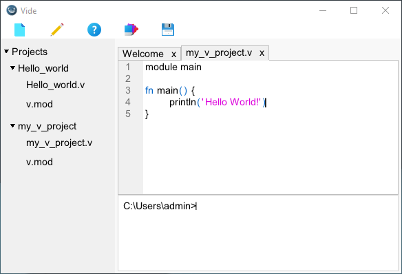
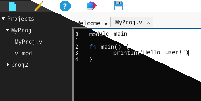
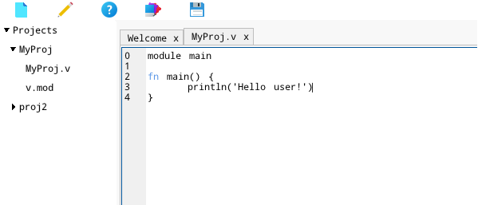
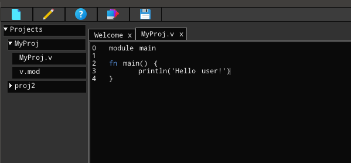
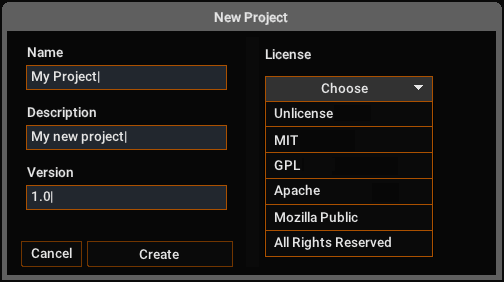
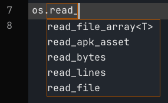
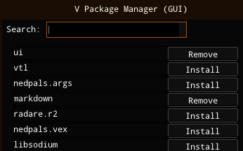

Alpha Software
Simple IDE for the V Programming
Language made in V.
Download
(1mb)
Github

Lite
Disk
RAM
Vide
1.5 MB
~ 40-50 MB
VS Code
308 MB
~ 330+ MB
Themes


Light Theme

Dark Theme

New Project Dialog

Code Suggestions
(Beta)

UI for
VPM
Vide - Simple IDE for V. Icons by Icons8.com
© 2021-2022 Isaiah.
·
Github